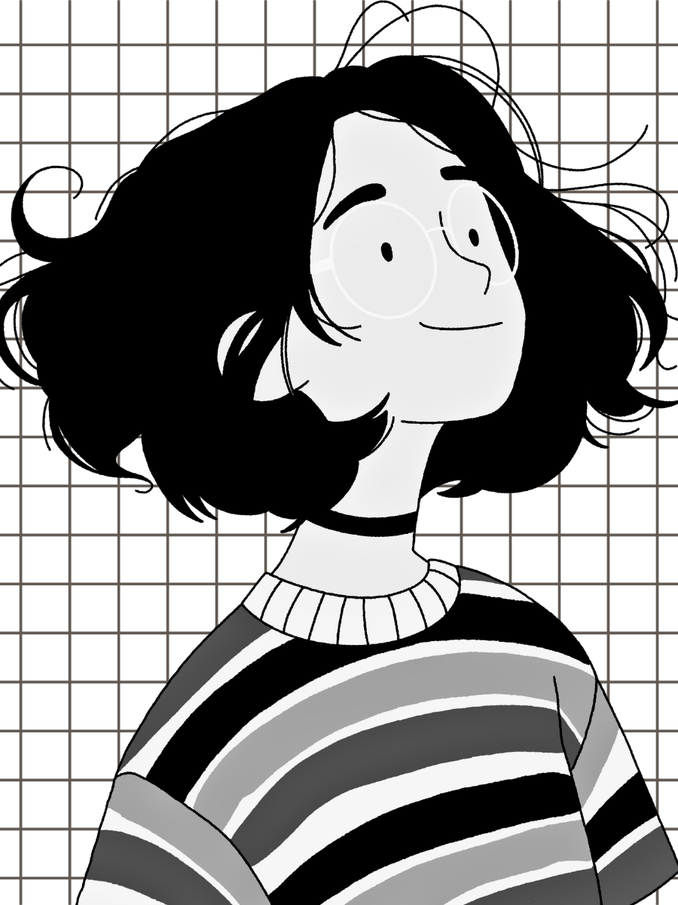

INDEPENDENTLY CURIOUS SINCE DAY ONE
VOL.001 / DUBLIN, IRELAND
The Portfolio Times
RESEARCH . ENGINEERING . INTERACTIVE MEDIA
THE FRONT-PAGE STORY
Building technology
around people.
A computer science engineer exploring the intersection of intelligent systems, human experience and thoughtful design.

COMPUTER SCIENCE x HUMAN-CENTRED DESIGN
THE PORTFOLIO TIMES